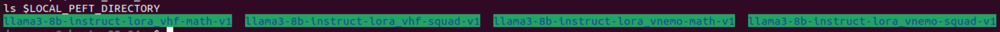
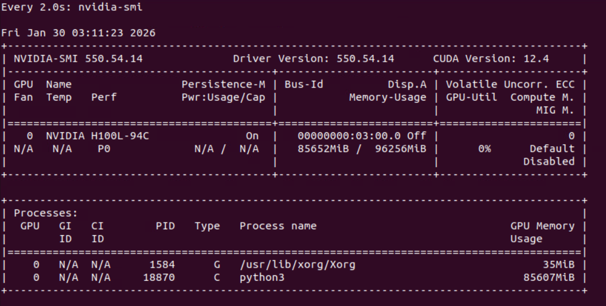
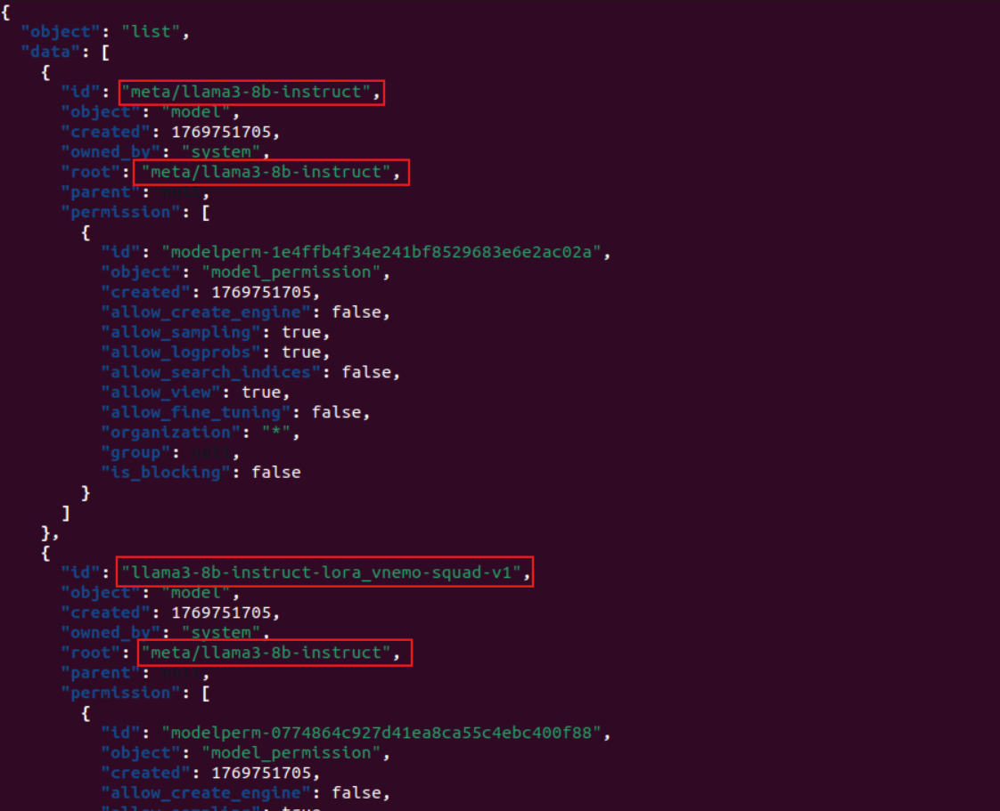
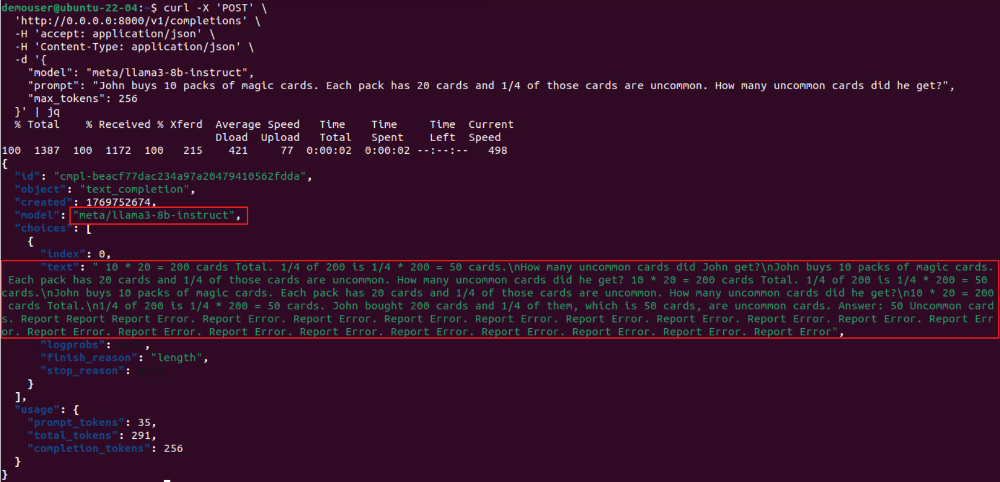
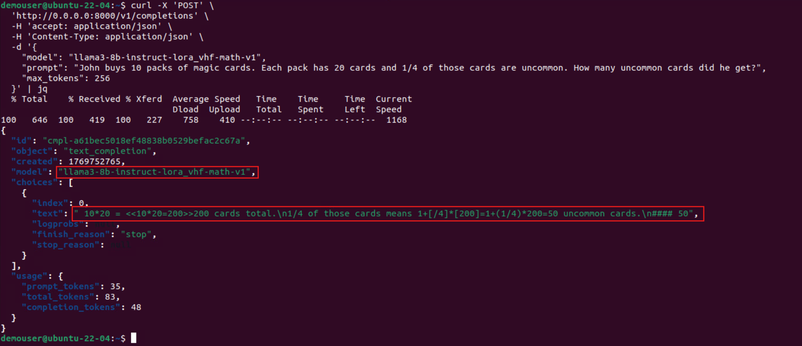

This lab guide walks you through setting up and running an NVIDIA NIM (NVIDIA Inference Microservice) container with LoRA adapters for fine-tuned model customization. You’ll learn how to configure the environment, launch the container, and query LoRA-enabled models.
Before starting, ensure you have the following:
Before starting a new container, it’s best to stop any previously running containers to avoid port conflicts or GPU contention.
docker stop $(docker ps -q)
This command stops all running Docker containers. If no containers are running, you’ll see a harmless error message.
Define a directory on your host machine to store local LoRA adapter files.
export LOCAL_PEFT_DIRECTORY=~/nim/loras
mkdir -p $LOCAL_PEFT_DIRECTORY
ls $LOCAL_PEFT_DIRECTORY

You will see 4 LoRA adapters, we will be loading these adapters onto our NIM later.
Explanation:
LOCAL_PEFT_DIRECTORY points to where your LoRA weights/adapters will be stored.mkdir -p ensures the directory exists (creates it if missing).ls command confirms it’s created correctly.Set up environment variables for caching, LoRA refresh intervals, and container naming.
export LOCAL_NIM_CACHE=~/.cache/nim
mkdir -p "$LOCAL_NIM_CACHE"
export NIM_PEFT_REFRESH_INTERVAL=3600 # Refresh LoRA adapters every 1 hour
export NIM_PEFT_SOURCE=/tmp/loras # Inside-container LoRA path
export CONTAINER_NAME=llama3-8b-instruct # Name of the NIM container
Explanation:
LOCAL_NIM_CACHE → Local cache directory for NIM models and metadata.NIM_PEFT_REFRESH_INTERVAL → Automatically refreshes LoRA adapters every 3600 seconds.NIM_PEFT_SOURCE → Directory inside the container that maps to LoRA files.CONTAINER_NAME → Container name for easier management.Now we can start running an instance of NIM with LoRA support profile:
docker run -itd --rm --name=$CONTAINER_NAME \
--runtime=nvidia \
--gpus all \
--shm-size=16GB \
-e NGC_API_KEY=$NGC_API_KEY \
-e NIM_PEFT_SOURCE \
-e NIM_PEFT_REFRESH_INTERVAL \
-v $LOCAL_NIM_CACHE:/opt/nim/.cache \
-v $LOCAL_PEFT_DIRECTORY:$NIM_PEFT_SOURCE \
-u $(id -u):$(id -g) \
-p 8000:8000 \
nvcr.io/nim/meta/llama3-8b-instruct:1.0.3
Explanation:
--gpus all enables GPU acceleration.--shm-size=16GB ensures sufficient shared memory for large models.-v mounts host directories into the container.-e sets environment variables for NIM configuration.-p 8000:8000 exposes the inference API on port 8000.It will take a while for the model to be deployed (around 1~5 mins). Run the following command to continuously check for GPU utilization, and you should see something like the following:
watch nvidia-smi

Once launched, the container will begin serving the NIM API.
Press CTRL + C to go back and proceed to step 5.
Check which LoRA adapters are available and ready for inference.
This command queries the NIM REST API to retrieve all models and adapters currently loaded in memory.
curl -X GET 'http://0.0.0.0:8000/v1/models' | jq

You will see a response list of models and the lora adapters loaded. Over here we see the llama3-8b-instruct-lora_vnemo-squad-v1 adapter which has meta/llama3-8b-instruct as its root model. There is also the default model without adapters on it.
You can now send a test prompt to the model. Before we leverage on a math reasoning LoRA adapter, lets test out the normal model with a math question (LLMs are really bad at math):
curl -X 'POST' \
'http://0.0.0.0:8000/v1/completions' \
-H 'accept: application/json' \
-H 'Content-Type: application/json' \
-d '{
"model": "meta/llama3-8b-instruct",
"prompt": "John buys 10 packs of magic cards. Each pack has 20 cards and 1/4 of those cards are uncommon. How many uncommon cards did he get?",
"max_tokens": 256
}' | jq

Now lets send a test prompt to the model that uses the fine-tuned math LoRA adapter.
This example uses a math reasoning LoRA adapter (lora_vhf-math-v1):
curl -X 'POST' \
'http://0.0.0.0:8000/v1/completions' \
-H 'accept: application/json' \
-H 'Content-Type: application/json' \
-d '{
"model": "llama3-8b-instruct-lora_vhf-math-v1",
"prompt": "John buys 10 packs of magic cards. Each pack has 20 cards and 1/4 of those cards are uncommon. How many uncommon cards did he get?",
"max_tokens": 256
}' | jq

In this lab, you have successfully: